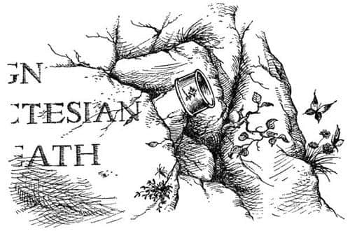

Macera Nasıl Bitti
“Neye bakalım?” dedi Edmund.
“Altının üzerindeki şekle” dedi Caspian.
“Küçük bir çekiç ve üzerinde yıldıza benzeyen bir elmas” dedi Drinian. “Bunu daha önce gördüm ben.”
“Gördün mü?” dedi Caspian. “Elbette gördün. Bu yüce Narnia hanedanının işareti. Bu, Lord Octesian’ın bileziği.”
“Hain” dedi Bastıbacak ejderhaya, “bir Narnia lordunu mu yedin?” Fakat ejderha şiddetle başını salladı.
“Ya da belki” dedi Lucy, “bu Lord Octesian’dır, bir büyüyle ejderhaya dönüşmüştür, hani bilirsiniz.”
“Hiçbiri olmayabilir” dedi Edmund. “Tüm ejderhalar altın biriktirir. Octesian’ın bu adadan daha ileri gitmediğini düşünmek sanırım yanlış olmaz.”
“Sen Lord Octesian mısın?” dedi Lucy. Ejderha üzgünce hayır anlamında başını salladığında, “Büyülenmiş biri misin – yani bir insan mısın demek istiyorum” diye sordu.
Başını şiddetle evet diye salladı ejderha.
Sonra birisi – daha sonra hiç kimse bunu önce Edmund’un mu yoksa Lucy’nin mi söylediğini bilemedi – “Sen, sen Eustace değilsin, değil mi?” dedi.
Eustace o korkunç ejderha başını sallayıp kuyruğunu denizde çırparken, herkes onun gözlerinden akan kocaman ve kaynar gözyaşlarından korunmak için geriye kaçtı (bazı denizciler donlarına burada yazamayacağım şeyler yaptılar).
Lucy onu teselli etmeye çalıştı ve hatta bütün cesaretini toplayıp pullu yüzünü öptü. Neredeyse herkes “Ne kötü şans” dedi ve birçoğu onu yalnız bırakmayacaklarına dair söz verdi ve yine birçoğu onu büyüden kurtarmanın bir yolu olduğuna emin olduklarını ve bir iki gün içinde onu eski haline döndüreceklerini söyledi. Kuşkusuz herkes Eustace’in hikâyesini dinlemeye can atıyordu, ancak o konuşamıyordu. Sonraki günlerde birkaç kez hikâyesini onların okuması için kuma yazmayı denedi. Ancak başarılı olamadı. Öncelikle (uygun kitapların hiçbirini okumamış olan) Eustace’in bir hikâyenin nasıl anlatılacağı konusunda fikri yoktu ve ikinci olarak da, kullanması gereken ejderha pençesinin kasları ve sinirleri yazmaya hiç mi hiç uygun değildi ve zaten yazmak için yaratılmamışlardı. Hikâyesini hiç bitiremedi; o daha anlatacaklarını bitiremeden dalgalar tüm yazdıklarını siliyordu. Ve sadece şunlar okunabiliyordu – noktalar kendisinin sildiği yerlerdir.
. . . ERHANIN YANİ EJDERHANIN MAĞARASINA . . . YUMAYA GİRMİŞ . . . ÇÜNKÜ . . . DERHA ÖLMÜŞTÜ VE ÇOK . . . MUR YAĞIYORDU UYANDIM VE KOLUM . . . ÇIKARAMAD . . . KAHROLSUN . . .
Bununla beraber, ejderha olduktan sonra Eustace’in karakterinin düzeldiği gün gibi ortadaydı. Yardım etmeye can atıyordu. Bütün adanın üzerinde uçmuş ve adanın her yerinin dağlık olduğunu ve sadece yabankeçilerinin ve yabandomuzu sürülerinin yaşadığını öğrenmişti. Bunların birçoğunu gemiye erzak olarak getirmişti. Aynı zamanda çok insancıl bir kasaptı, çünkü bir hayvanı kuyruğunun bir darbesiyle aniden öldürebiliyor ve böylece hayvan acı çekmiyordu. Kuşkusuz birkaçını da kendisi yiyordu, ama her zaman yalnız yiyordu, çünkü artık bir ejderha olduğundan yiyeceklerini çiğ çiğ yemekten hoşlanıyordu. Diğerlerinin onu bu utandırıcı durumda görmelerine dayanamazdı. Bir gün uzak bir vadiden, kökleriyle birlikte çıkardığı ve ana direk yapılabilecek kadar büyük ve uzun bir çamla yavaşça, bitkin bir halde ama büyük bir zaferle kampa döndü. Akşamları, hava yoğun yağmurlardan sonraki gibi serin olduğunda, bütün grup gelip sırtını onun sıcak vücuduna dayayarak ısınıyor ve kuruyordu; kızgın nefesi ne olursa olsun her şeyi yakıyordu. Bazen seçilmiş bir grubu sırtına alıp uçuyor ve üstündekiler aşağıdaki yeşil yamaçları, kayalık tepeleri, dar, çukura benzeyen vadileri ve doğuda, denizin üzerinde çok uzaklardaki mavi ufukta karaya benzeyen daha koyu mavi bir noktayı görebiliyordu.
Sevilmenin (onun için yepyeni bir şeydi) ve dahası diğer insanları sevmenin mutluluğu, Eustace’i ümitsizliğe düşmekten alıkoyuyordu. Çünkü bir ejderha olmak çok can sıkıcıydı. Bir dağ gölünün üzerinden uçarken kendi görüntüsünün yansımasını gördüğünde ürperiyordu. Yarasaya benzer kanatlardan, sırtının testere gibi şeklinden ve zalim, kıvrık pençelerinden nefret ediyordu. Yalnız başına kalmaktan korkuyordu, ama diğerleriyle beraber olmaya da utanıyordu. Sıcak su torbası olarak kullanılmadığı akşamlarda kamptan usulca uzaklaşıyor ve ormanla deniz arasında bir yılan gibi kıvrılarak uyuyordu. Bu gibi zamanlarda, çok şaşırmıştı, ama onu sürekli teselli eden tek kişi Bastıbacak’tı. Soylu fare, kamp ateşinin etrafındaki gruptan sessizce uzaklaşıp, dumanlı nefesin gelmeyeceği yere, rüzgârın geldiği tarafa, ejderhanın başının yanına otururdu. Orada, Eustace’e olan şeyin feleğin çarkının dönüşünün çarpıcı bir örneği olduğunu açıklardı ve eğer Narnia’da kendi evinde olsalardı (evi gerçek bir ev değil bir kovuktu ve ejderhanın bırakın vücudunu, başı bile içine sığmazdı) ona, refah içindeyken en acıklı durumlara düşen ve birçoğu tekrar eski durumlarına dönerek ondan sonra mutluluk içinde yaşayan yüzden fazla imparator, kral, dük, şövalye, şair, gökbilimci, filozof ve büyücü gösterebileceğini söylerdi. Belki pek rahatlatıcı değildi ama iyilikle söylenmiş sözlerdi ve Eustace bunu asla unutmadı.
Kuşkusuz herkesin başının üzerinde kara bulutlar gibi dolaşan soru, denize açılmaya hazır oldukları zaman ejderhalarıyla ne yapacaklarıydı. Yanlarında olduğu zaman bunun hakkında konuşmamaya çalışıyorlardı, ama “Güvertenin bir yanına uzunlamasına sığar mı? Dengeyi sağlamak için bütün erzakımızı diğer tarafa taşımak zorunda kalacağız” ya da “Yedekte çeksek olur mu?” ya da “Uçarak bize ayak uydurabilir mi?” ve (en sık olarak da), “Onu nasıl besleriz?” gibi şeyler söyleniyordu.
Zavallı Eustace gemiye geldiği ilk günden beri tam bir baş belası olduğunu ve bu durumun şimdi daha da büyük bir sorun yarattığını anladı. Bu gerçek, tıpkı bileziğin ön ayağını yiyip bitirmesi gibi kemiriyordu içini. Büyük dişleriyle onu parçalamaya çalışmanın durumu sadece kötüleştirdiğini biliyordu, ama arada sırada, özellikle sıcak gecelerde ondan kurtulmaya çalışmaktan vazgeçmek imkânsızdı.
Ejderha Adası’nda karaya çıkmalarından yaklaşık altı gün sonra, Edmund bir sabah erken uyanmıştı. Hava yeni aydınlanmaya başlamıştı; deniz ile bulunduğu yer arasındaki ağaçlar rahat seçiliyordu, ama diğer taraf karanlıktı. Uyanırken bir şeylerin hareket ettiğini duyduğunu düşündü, dirseğinin üzerinde doğrulup etrafına bakındı ve az sonra ormanın denize bakan tarafında karanlık bir şeklin hareket ettiğini gördü. Aklına gelen ilk soru, “Bu adada yerli olmadığına o kadar emin miyiz?” oldu. Sonra onun Caspian olduğunu düşündü – aşağı yukarı aynı boydaydı – ama Caspian’ın yanında uyuduğunu biliyor ve hareket etmediğini görebiliyordu. Edmund kılıcının yerinde olduğuna emin olduktan sonra durumu araştırmak üzere ayağa kalktı. Sessizce ormanın kıyısına geldi, karanlık şekil hâlâ oradaydı. Şimdi onun Caspian’a göre çok küçük, Lucy’ye göreyse çok büyük olduğunu gördü. Şekil kaçmaya çalışmadı. Edmund kılıcını çekti, tam ona meydan okumak üzereyken, yabancı alçak bir sesle, “Sen misin Edmund?” dedi.
“Evet. Sen kimsin?” dedi Edmund.
“Beni tanımadın mı?” dedi diğeri. “Benim – Eustace.”
“Hey” dedi Edmund, “gerçekten de öyle. Sevgili dostum—”
“Şşş” dedi Eustace ve sonra sanki düşecekmiş gibi sendeledi.
“Eustace!” dedi Edmund onu tutarak. “Ne oluyor? Hasta mısın?”
Eustace uzun bir süre o kadar sessiz kaldı ki, Edmund onun bayıldığını düşünüyordu, ama sonunda, “Çok kötüydü. Tahmin edemezsin – ama şimdi iyi. Bir yere gidip konuşabilir miyiz? Henüz diğerleriyle karşılaşmak istemiyorum” dedi.
“Evet, nereye istersen” dedi Edmund. “Şuraya gidip kayaların üzerinde oturabiliriz. Bana bak, tekrar kendine döndüğünü gördüğüme çok memnunum. Çok kötü zamanlar geçirmiş olmalısın.”
Kayalara gittiler, gökyüzü gittikçe aydınlanıp ufkun yakınında çok alçaktaki parlak bir yıldız hariç diğer yıldızlar kaybolurken, yüzleri koya dönük oturdular.
“Diğerlerine de anlatıp hepsini beraberce aradan çıkarıncaya kadar sana nasıl bir – bir ejderhaya dönüştüğümü anlatmayacağım” dedi Eustace. “Bu arada, geçen sabah buraya geldiğimde siz söyleyene kadar bir ejderha olduğumu bile bilmiyordum. Sana ejderhalıktan nasıl kurtulduğumu anlatacağım.”
“Haydi, başla!” dedi Edmund.
“Şey, dün gece kendimi her zamankinden daha kötü hissediyordum. O canavar bilezik anlatamayacağım kadar çok acıtıyordu—”
“Kolun şimdi nasıl?”
Eustace güldü – Edmund’un daha önce duyduklarından çok daha farklı bir gülüştü bu – ve bileziği kolayca sıyırarak kolundan çıkardı. “İşte” dedi, “kim isterse onun olsun. Şey, dediğim gibi, uyanık bir durumda uzanmış kendime ne olacağını merak ediyordum. O anda – ama seni uyarmam gerek, hepsi bir rüya olabilir. Bilemiyorum.”
“Devam et” dedi Edmund, büyük bir sabırla.
“Şey, neyse, bakınırken görmeyi beklediğim son şeyi gördüm: Kocaman bir aslan ağır ağır bana doğru geliyordu. Gariptir ki dün gece ay yoktu, ama aslanın olduğu yerde ayışığı vardı. Giderek bana yaklaştı. Ondan ölesiye korkuyordum. Bir ejderha olarak her aslanı kolayca yenebileceğimi düşünebilirsin. Ancak bu o türden bir korku değildi. Onun beni yemesinden korkmuyordum, sadece ondan korkuyordum – anlarsın ya. Neyse, bana yaklaştı ve dimdik gözlerimin içine baktı. Gözlerimi sımsıkı kapattım, ama bunun yararı olmadı, çünkü bana kendisini takip etmemi söyledi.”
“Konuştuğunu mu söylemek istiyorsun?”
“Bilmiyorum. Şimdi sen sözünü ettiğinde düşünüyorum da, konuştuğunu sanmıyorum. Fark etmez, bana bir şekilde söyledi. Bana söylediğini yapmak zorunda olduğumu biliyordum, bu yüzden ayağa kalkıp onu takip ettim. Beni çok uzaklara, dağlara götürdü. Nereye gidersek gidelim aslanın etrafında sürekli o ayışığı vardı. Böylece sonunda daha önce hiç görmediğim bir dağın tepesine geldik ve bu dağın tepesinde bir bahçe vardı; ağaçlar, meyveler ve her şeyiyle bir bahçe. Bahçenin ortasında da bir pınar.
Bunun bir pınar olduğunu biliyordum, çünkü dibinden kaynayan suyu görebiliyordum. Birçok pınardan daha büyüktü; sanki içine mermer merdivenlerle inilen, çok büyük ve yuvarlak bir havuz gibiydi. Su o kadar berraktı ki, içine girebilirsem ayağımdaki ağrıyı hafifleteceğine emindim. Ama aslan bana önce üstümdekileri çıkarmamı söyledi. Kelimeleri yüksek sesle söyleyip söylemediğini bilmediğimi sana hatırlatmalıyım.
Soyunamayacağımı, çünkü üzerimde elbise olmadığını söylemek üzereyken ejderhaların yılan türünden şeyler olduğunu ve yılanların da deri değiştirdiğini düşündüm. Ah, kuşkusuz dedim kendi kendime, aslan bunu kastediyor. Böylece vücudumu kaşıdım ve her yerden pullar dökülmeye başladı. Sonra biraz daha sertçe kaşındım ve derim, hani bir hastalıktan sonra olduğu gibi, ya da bir muzmuşum gibi, harikulade bir biçimde soyulmaya başladı. Bir iki dakika içinde derimden kurtulmuştum. Orada yanımda, oldukça iğrenç görünen deriyi görebiliyordum. Bu çok harika bir duyguydu. Böylece yıkanmak için havuza girdim.
Ayağımı suya sokmadan az önce ayaklarımın sert kaba ve önceden olduğu gibi pul dolu olduğunu gördüm. Böylece tekrar kaşındım, parçaladım ve bu alttaki deri de güzel bir şekilde soyuldu. Deriden kurtulup onu diğer derinin yanında serilmiş durumda bıraktım ve yıkanmak üzere pınara gittim.
Eh, yine tastamam aynı şey oldu. Kendi kendime, eyvah, kaç kez deri değiştirmek zorunda kalacağım diye düşündüm. Çünkü ayağımı suya sokmak için can atıyordum. Böylece üçüncü kez kaşındım ve iki kez yaptığım gibi üçüncü deriden de kurtuldum. Ne var ki, suda kendime bakar bakmaz bunun yararının olmadığını anladım.
Sonra aslan – konuşup konuşmadığını bilmiyorum ama – ‘elbiselerini benim çıkarmama izin ver’ dedi. Pençelerinden korktuğumu sana söyleyebilirim, ama artık her şeyi göze alabilirdim. Söylediğini yapabilmesi için sırtüstü yattım.
Açtığı ilk yarık öylesine derindi ki ta kalbime kadar gittiğini düşündüm. Deriyi çekmeye başladığında yaşamımda hissettiğim en kötü acıyı hissettim. Buna dayanmamı sağlayan tek şey o şeyin vücudumdan soyulup gitmesinin hoşluğuydu. Eğer, bir yaranın kabuğunu kopardıysan bunu bilirsin. Çok acıtır ama koptuğunu görmek çok eğlencelidir.”
“Ne demek istediğini çok iyi anlıyorum” dedi Edmund.
“Eh, o hayvanca şeyi tamamen çıkardı – benim de üç kez yaptığım gibi, ancak ben yaparken canım o kadar acımamıştı – ve deri işte orada, otların üzerine serilmişti: Diğerlerinden çok daha kalın, koyu renkli ve yamru yumruydu. İşte ben, soyulmuş bir muz gibi düzgün, yumuşak ve olduğumdan çok daha küçüktüm. Sonra aslan beni yakalayarak kaldırdı – üzerimde derim olmadığından vücudum çok hassastı ve bu yüzden pek hoşlanmadım – sonra beni suya fırlattı. Bu canımı yakmıştı, ama sadece bir an için. Bundan sonra her şey mükemmeldi; yüzmeye başlar başlamaz kolumdaki tüm ağrının yok olduğunu fark ettim. Sonra bunun nedenini anladım. Eski halime dönmüştüm. Kollarım hakkında bir şeyler anlatırsam düzenbaz olduğumu düşünürsün. Biliyorum Caspian’ınkine kıyasla hiç kasım yok, ama onları görmekten öylesine memnundum ki.
Sonra aslan beni havuzdan çıkardı ve elbiselerimi giydirdi—”
“Elbiselerini mi giydirdi? Pençeleriyle mi?”
“Şey, bu kısmı pek hatırlamıyorum, ama bir şekilde yaptı işte. Yeni elbiseler… aslında şu anda üzerimde olanları giydirdi ve sonra aniden kendimi burada buldum. İşte bu yüzden tüm bunların bir rüya olduğunu düşünüyorum.”
“Hayır. Rüya değildi” dedi Edmund.
“Neden?”
“Şey, ilk neden, elbiselerin var. İkincisi de sen – şey, ejderhalıktan kurtuldun.”
“Peki başıma gelenler hakkında ne düşünüyorsun?” diye sordu Eustace.
“Sanırım Aslan’ı gördün” dedi Edmund.
“Aslan!” dedi Eustace. “Şafak Yıldızı’na bindiğimizden beri bu isimden bahsedildiğini birçok kez duydum. Ayrıca – nedenini bilmiyorum – ondan nefret ettiğimi hissediyordum. Zaten o zamanlar ben her şeyden nefret ediyordum. Bu arada özür dilemek istiyorum. Sanırım çok kötü davrandım.”
“Önemli değil” dedi Edmund. “Aramızda kalsın ama Narnia’ya ilk yolculuğumuzda benim olduğumdan daha kötü değildin. Sen eşeklik ettin, ama ben bir haindim.”
“Eh, öyleyse anlatma” dedi Eustace. “Aslan kim? Onu tanıyor musun?”
“Şey – o beni bilir” dedi Edmund. “O, denizler ötesindeki imparatorun oğlu, beni kurtaran, Narnia’yı kurtaran Büyük Aslan’dır. Onu hepimiz gördük. En sık Lucy görür. Şu anda gittiğimiz yer Aslan’ın ülkesi olabilir.”
Bir süre ikisi de sessiz kaldı. Son parlak yıldız da kayboldu; sağ taraflarındaki dağlar yüzünden güneşin doğuşunu görememelerine rağmen, tepelerindeki gök ve önlerindeki sahilin gül pembesi renginden dolayı şafak söktüğünü biliyorlardı. Sonra arkalarındaki ormanda papağan cinsinden bir kuş öttü. Ağaçlar arasındaki hareketliliği ve sonra da Caspian’ın borusunu duydular. Kamp uyanmıştı.
Edmund ve eski haline dönmüş Eustace kamp ateşi etrafındaki kahvaltı yerine döndüklerinde herkes çok sevindi ve hikâyeyi dinledi. Herkes öbür ejderhanın Lord Octesian’ı yıllarca önce öldüren ejderha mı yoksa Octesian’ın kendisi mi olduğunu merak ediyordu. Eustace’in mağarada ceplerine doldurduğu mücevherler, o zaman giydiği elbiselerle birlikte ortadan kaybolmuştu; ama kimse ve özellikle de Eustace, hazineyi getirmek üzere o vadiye geri dönmeyi istemiyordu.
Birkaç gün içinde, direği yeniden dikilmiş, yeniden boyanmış ve erzakla doldurulmuş Şafak Yıldızı denize açılmaya hazırdı. Yola çıkmadan önce koya bakan bir kayalığın yüzüne Caspian şu sözleri kazıttı:
EJDERHA ADASI
NARNİA KRALI X. CASPİAN
TARAFINDAN HÜKÜMDARLIĞININ
DÖRDÜNCÜ YILINDA KEŞFEDİLDİ.
LORD OCTESIAN
SANIRIZ ÖLÜMLE BURADA TANIŞTI.
“O andan itibaren Eustace bambaşka bir çocuk oldu” demek güzel ve yerinde olur. Daha açık bir dille söylemek gerekirse, değişik bir çocuk olmaya başladı diyebiliriz. Arada sırada geçmişteki gibi oluyordu. Bezdirici olduğu günler yaşanmıyor değildi. Ancak ben o günlerin birçoğunu görmezden geleceğim. İyiye gidiş başlamıştı.
Lord Octesian’ın bileziğinin garip bir yazgısı vardı. Eustace onu istemiyordu, Caspian’a verdi, Caspian da Lucy’ye vermek istedi. Lucy onu almak istemiyordu. Caspian, “İyi öyleyse, yakalayan yakalasın” diyerek bileziği havaya fırlattı. Bu olay hepsi ayakta durmuş kayadaki yazılara bakarken olmuştu. Bilezik güneşte parıldayarak yükseldi ve iyi fırlatılmış bir demir halka gibi, güzelce, kayadaki bir çıkıntıya takıldı kaldı. Kimse onu almak için yukarıya tırmanamazdı ve yine kimse onu almak için yukarıdan aşağıya sarkamazdı. Bildiğim kadarıyla hâlâ orada asılı duruyor ve sonsuza kadar da orada kalabilir.
